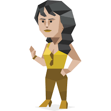

| Introdution | My Values | My Personality | Interest |
|---|---|---|---|
|
Hello! I am THIRI LAE WIN😀, studying at Common ICT
Programme
at
SP
I am hoping to choose DIT
after the 1st Semester. |

When it comes to personality, I think my personality is a bit weird.
HAHA.
I love to be alone but somehow, I love to be in crowded places. I am an introvert,
but I became a super extrovert when I’m around the people I love. I like to spend money
but
I’m also stingy. SEE? My personality is always described by “buts”. Whatsoever, I DO NOT
want to
change my personality. |

A couple years ago, I thought I was not brave enough. I always needed some help from a
person near me.
I cannot handle things alone. I love to live alone so I do not have many friends. |
I love to listen to music and watch drama. I prefer living alone during my free time,
but no worries, because songs and Korean drama accompanies me. |